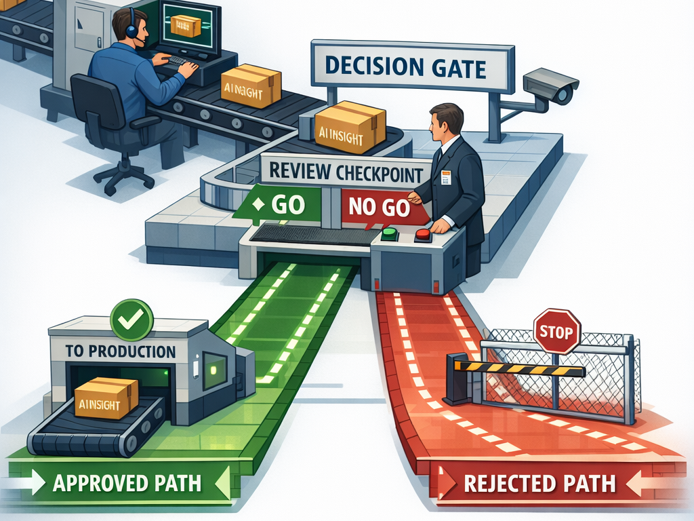

Governance & security
Non-negotiable design rule
AI can recommend. Only humans can execute production change.
Built for governed adoption, not blind automation.
Evidence before action
Every AI decision must be backed by observable data and a traceable evidence chain.
Human approval for production
Production actions stay behind mandatory approval gates aligned with ITIL process.
Minimum permissions by design
Each agent receives only the access needed for the task it is assigned.
